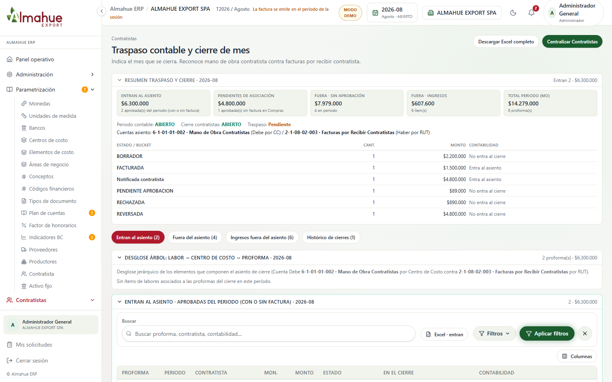
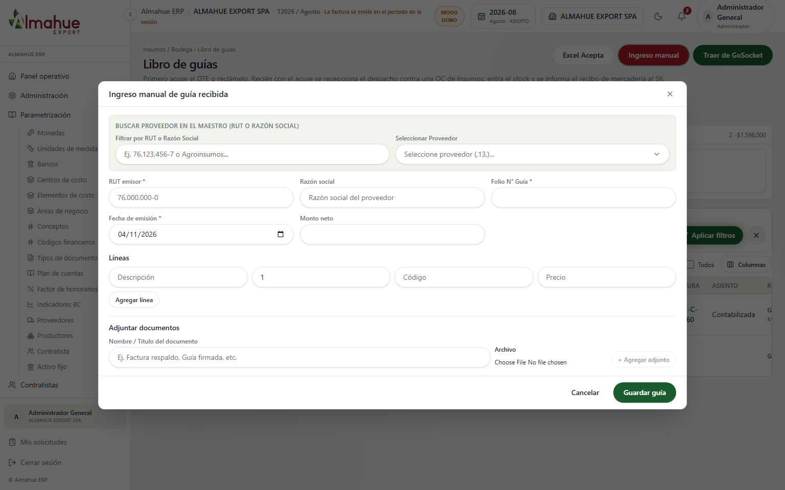
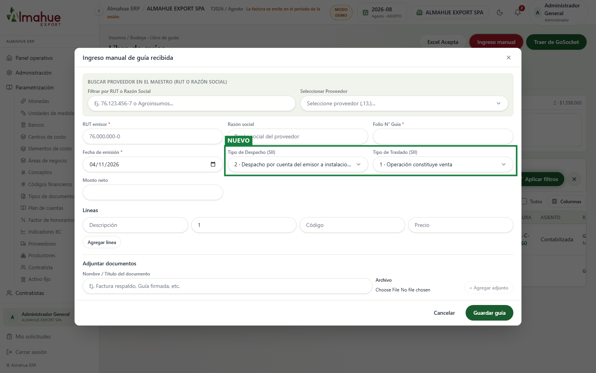
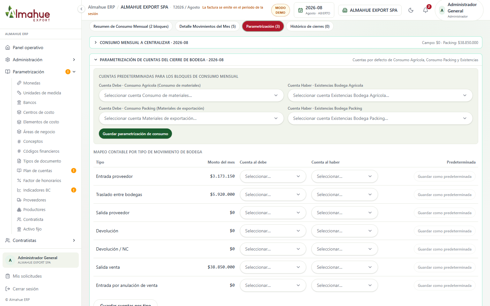
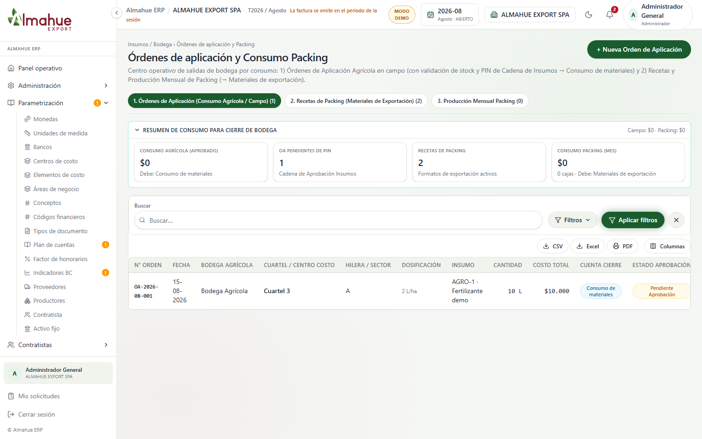

1. Contratistas - Traspaso: Pendientes de asociación (CHK-03)


El recuadro marca solo la tarjeta «Pendientes de asociación» (aprobadas sin factura en Compras). Ya no se destaca «Entran al asiento». No se pulsó Centralizar.
ALMAHUE EXPORT SPA, periodo 2026-08 (ABIERTO), Modo Demo. Capturas 1536x960. Cierre de huecos PARCIAL del checklist 03/11: Pendientes de asociación, guía manual Despacho/Traslado persistido, parametrización por módulo, PIN real en Órdenes de Aplicación, cobertura 100% al asociar (backend) y suplencias en bandeja OC. El recuadro verde está solo en la captura. Ver también recorrido.html.

El recuadro marca solo la tarjeta «Pendientes de asociación» (aprobadas sin factura en Compras). Ya no se destaca «Entran al asiento». No se pulsó Centralizar.


Antes: el formulario sin los dos selects SII. Después: un solo recuadro sobre Tipo de Despacho + Tipo de Traslado (ahora se persisten al guardar). No se pulsó Guardar guía.


Antes: pestaña Parametrización sin el bloque de enlaces. Después: un solo recuadro alrededor de «Parametrización por módulo» (Insumos aquí + links Contratistas / Activo fijo). No se pulsó Guardar.


Antes: OA pendiente con botón «Aprobar con PIN». Después: modal abierto con campo PIN (validación real vía auth). No se pulsó Confirmar PIN y Rebajar Stock.